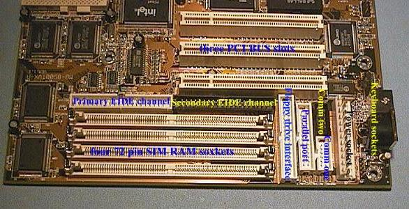
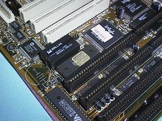
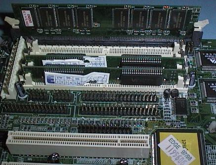

Phil Storrs PC Hardware book
Typical Pentium (and 686) Hardware
The modern Pentium system board provides circuitry for:
- Two EIDE interfaces
- A Floppy Disk Drive Interface
- Two high speed Communications (Serial) Ports
- One Enhanced Parallel Port
|
|
The following three images show a typical Pentium System Board of 1997 vintage
In these three images look for:
- PCI and ISA slots
- 72 pin SIMM RAM sockets and RAM modules
- Socket Seven Processor socket
- Voltage regulators to supply the lower Core Voltage required by the processor
- The headers connectors for:
- Two Comm (Serial) Ports
- Parallel I/O Port
- Primary and Secondary EIDE interface channels
- Floppy Disk Drive Interface
- Keyboard sockets, both 5 pin DIN and PS/2 type
- Power connector

The board below is a Pentium Pro system board.
Most Pentium Pro system boards are ATX format, this board is a Baby AT type (conventional) board.
Notice:
- the larger processor socket
- the VRM (voltage regulator module) next to the processor socket
- the BIOS ROM and the "Dallas" clock module above the processor
The board below is an ATX format System Board
This board is a Dual Pentium Pro System Board
Notice
- the two processor sockets
- the six 72 pin SIMM sockets
- five PCI bus slots and three ISA bus slots
- I/O (Input / Output) function sockets on the rear of the board (ATX format)
- the IDE (hard drive interface) and floppy drive interface connectors on the lower right side
The following two pictures show a January 1997 SIS chip set Pentium/686 system board.
- Look for the single chip set chip, the one with the green heat sink
- This board is fitted with an IBM 686 processor, note the clip on heat sink required with this chip.

Note the Processor has a built in fan, and look for the Dallas chip.
The following images show a System Board that can use 72 pin SIMM's and a DIMM


These two images show DIMM and 72pin SIMM RAM fitted to this same board.
The next four images show a modern Pentium II System Board

The Pentium II processor is a Slot One processor
This is a Baby AT System board but it has Baby AT and ATX power connectors
This System Board has three DIMM RAM sockets, two ISA Bus slots, four PCI slots and an AGP port.
Copyright © Phil. Storr, last updated 26th December 1998